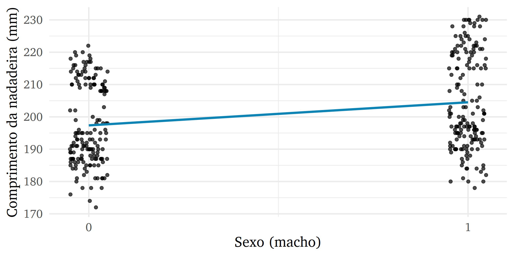

Modelos de regressão
Aula 6
Bruno Montezano
Grupo Alliance
Programa de Pós-Graduação em Psiquiatria e Ciências do Comportamento
Universidade Federal do Rio Grande do Sul
5 de junho de 2023
Conteúdo de hoje
- Conceito
- Regressão linear simples
- Regressão linear múltipla
- Coeficiente de determinação
- Preditores categóricos
- Desafios
Ciclo da ciência de dados

Regressão linear
Método estatístico para sumarizar e estudar relações entre duas variáveis contínuas
\(X\): preditor ou variável explicativa ou variável independente
\(Y\): desfecho ou variável resposta ou variável dependente
Exemplo: salário (\(Y\)) e anos de estudo (\(X\))
Qual a utilidade das retas?

Como a reta é construída?
Construída a partir da fórmula:
\(\beta_0\): intercepto, ou valor de \(Y\) quando \(X = 0\)
\(\beta_1\): coeficiente angular (slope)
- Entendido como a mudança no \(Y\) a partir do aumento de 1 unidade no \(x_1\)
Definições e nomenclaturas
\(x_1, x_2, \cdots, x_p\): variáveis explicativas (variáveis independentes ou features ou preditores)
\(X = x_1, x_2, \cdots, x_p\): conjunto de todos os preditores
\(Y\): variável resposta (ou variável dependente ou target)
\(\hat{Y}\): valor esperado (ou predição ou valor estimado ou fitted)
\(f(X)\) pode ser entendida como “modelo” ou “hipótese”
No primeiro exemplo:
\(x_1\):
altura— Altura em centímetros\(Y\):
peso— Peso em quilogramas
Observado vs. Esperado
\(Y\) é um valor observado (ou verdade) a partir dos dados
\(\hat{Y}\) é um valor esperado (predição, ou valor estimado, ou fitted)
\(Y - \hat{Y}\) é o resíduo (ou erro)
Por definição, \(\hat{Y} = f(X)\) que é o valor que a função \(f\) retorna. Em suma, nosso modelo.
Por que ajustar uma \(f\)?
Predição
Em muitas situações, \(X\) está disponível facilmente mas \(Y\) não é fácil de descobrir (ou mesmo não é possível descobrí-lo).
Queremos que \(\hat{Y}=f(X)\) seja uma boa estimativa (preveja bem o futuro).
Exemplo: Com quantos gramas irá nascer um bebê na maternidade do HCPA?
Inferência
Em inferência estamos mais interessados em entender a relação entre as variáveis explicativas \(X\) e a variável resposta \(Y\).
Exemplos:
- Qual o efeito da idade na função cognitiva dos pacientes bipolares?
- Os níveis de estresse podem explicar a severidade de sintomas depressivos?
Nessa aula, nosso foco é inferência.
Vamos trabalhar com gambás
Os dados apresentam informações de gambás da Austrália e Nova Guiné.
Rows: 104
Columns: 8
$ local <dbl> 1, 1, 1, 1, 1, 1, 1, 1, 1, 1, 1, 1, 1, 1, 1, 1, 1, …
$ populacao <chr> "Vic", "Vic", "Vic", "Vic", "Vic", "Vic", "Vic", "V…
$ sexo <chr> "m", "f", "f", "f", "f", "f", "m", "f", "f", "f", "…
$ idade <dbl> 8, 6, 6, 6, 2, 1, 2, 6, 9, 6, 9, 5, 5, 3, 5, 4, 1, …
$ comprimento_cabeca <dbl> 94.1, 92.5, 94.0, 93.2, 91.5, 93.1, 95.3, 94.8, 93.…
$ largura_cranio <dbl> 60.4, 57.6, 60.0, 57.1, 56.3, 54.8, 58.2, 57.6, 56.…
$ comprimento_total <dbl> 89.0, 91.5, 95.5, 92.0, 85.5, 90.5, 89.5, 91.0, 91.…
$ comprimento_cauda <dbl> 36.0, 36.5, 39.0, 38.0, 36.0, 35.5, 36.0, 37.0, 37.…
Exemplo com gambás
Regressão linear simples
Exemplo

Melhor reta no R
Call:
lm(formula = comprimento_cabeca ~ comprimento_total, data = gambas)
Coefficients:
(Intercept) comprimento_total
42.7098 0.5729 “Melhor reta” baseado em que?
A gente quer a reta que erre menos.
Exemplo de medida de erro: Erro Quadrático Médio.
\[ EQM = \sqrt{\frac{1}{N}\sum(y_i - \hat{y_i})^2} \]

E se quisermos usar mais preditores?
O que o R nos diz?
modelo_linear_multiplo <-
lm(comprimento_cabeca ~ comprimento_total + comprimento_cauda,
data = gambas)
summary(modelo_linear_multiplo)
Call:
lm(formula = comprimento_cabeca ~ comprimento_total + comprimento_cauda,
data = gambas)
Residuals:
Min 1Q Median 3Q Max
-6.9660 -1.6217 -0.3254 1.2406 7.2855
Coefficients:
Estimate Std. Error t value Pr(>|t|)
(Intercept) 46.7658 5.6079 8.339 0.0000000000003964 ***
comprimento_total 0.6443 0.0712 9.049 0.0000000000000111 ***
comprimento_cauda -0.2775 0.1566 -1.772 0.0794 .
---
Signif. codes: 0 '***' 0.001 '**' 0.01 '*' 0.05 '.' 0.1 ' ' 1
Residual standard error: 2.569 on 101 degrees of freedom
Multiple R-squared: 0.4934, Adjusted R-squared: 0.4833
F-statistic: 49.18 on 2 and 101 DF, p-value: 1.223e-15Coeficiente de determinação
O \(R^2\) (coeficiente de determinação) é a proporção da variância na variável resposta que pode ser explicada pelos preditores
Varia de 0 a 1
Preditores categóricos
Preditores com apenas duas categorias
Pergunta de pesquisa: O tamanho das nadadeiras dos pinguins variam conforme o sexo?

Preditores categóricos
Preditores com 3 ou mais categorias
Modelo:
\[ y_i = \beta_0 + \beta_1x_{1i} + \beta_2x_{2i} \]
Em que:
\[ x_{1i} = \Bigg \{ \begin{array}{ll} 1 & \text{se for }\texttt{Pinguim-de-barbicha}\\0&\text{caso contrário}\end{array} \]
\[ x_{2i} = \Bigg \{ \begin{array}{ll} 1 & \text{se for }\texttt{Pinguim-gentoo}\\0&\text{caso contrário}\end{array} \]
Heteroscedasticidade
- Inconstância da variabilidade dos erros
Lidando com a heteroscedasticidade
- Como diagnosticar?
- Visualização dos resíduos (
gglm::gglm()) - Testes (Breuch-Pagan através da função
lmtest::bptest())
- Visualização dos resíduos (
- Como tratar?
- Transformações na variável resposta (\(log(Y)\), \(\sqrt{Y}\), \(\frac{1}{Y}\))
- Regressão com pesos
Multicolinearidade
Ocorre quando duas ou mais variáveis preditoras são altamente correlacionadas umas com as outras
Não fornecem informações exclusivas
Exemplo: preço de um imóvel (\(Y\)) explicado pela área (\(x_1\)) e número de cômodos (\(x_2\))
Lidando com a multicolinearidade
- Problemas
- Instabilidade numérica
- Desvios padrão inflados
- Interpretação comprometida
- Soluções
- Eliminar uma das variáveis muito correlacionadas
- Consultar o variance inflation factor (VIF)
area comodos
6.818079 6.818079 - Regra geral
- Valor 1: sem correlação entre o preditor e os demais preditores
- Valor entre 1 e 5: Correlação moderada entre o preditor e demais preditores
- Valor maior que 5: Correlação severa que pode afetar \(p\)-valores e coeficientes da regressão, sendo potencialmente não confiáveis
Outliers
- As observações distantes das outras do conjunto de dados são consideradas outliers
Lidando com outliers
- Como diagnosticar?
- Visualização univariada (histograma, boxplot)
- Comparação do valor com o desvio padrão
- Distância de Cook
- Como tratar?
- Transformações \(log()\), etc
- Categorização
- Remover valores extremos (não recomendado)
Correlação vs. Regressão linear
Similaridades
Coeficiente de regressão padronizado é o mesmo que o coeficiente de correlação de Pearson
O quadrado do coeficiente de correlação de Pearson é o mesmo que o \(R^2\) na regressão linear simples
O sinal do coeficiente não-padronizado da regressão será o mesmo do coeficiente de correlação
Nenhum dos métodos respondem perguntas de causalidade
Diferenças
A equação da regressão (\(\beta_0 + \beta_1x_1\)) pode ser usada para fazer predições de \(Y\) baseado em \(X\)
Apesar da correlação se referir comumente a relações lineares, o conceito pode estar associado a outros tipos de associação
Correlação entre \(X\) e \(Y\) é a mesma correlação de \(Y\) e \(X\). Já na regressão linear, o coeficiente muda quando comparamos um modelo que prediz \(Y\) a partir de \(X\) e um modelo que prediz \(X\) a partir de \(Y\)
Tarefa de casa
- Ler Capítulo 8 do livro OpenIntro Statistics sobre Introduction to linear regression
- Caso queira se aprofundar, ler Capítulo 9 sobre Multiple and logistic regression
- A partir dos dados
dados_irisdo pacotedados, crie um modelo de regressão linear simples e um modelo de regressão linear múltipla com as variáveis da sua escolha- Lembre-se que o desfecho deve ser contínuo (numérico)
- Crie um gráfico de dispersão/pontos (scatterplot) para acompanhar sua análise de regressão linear simples